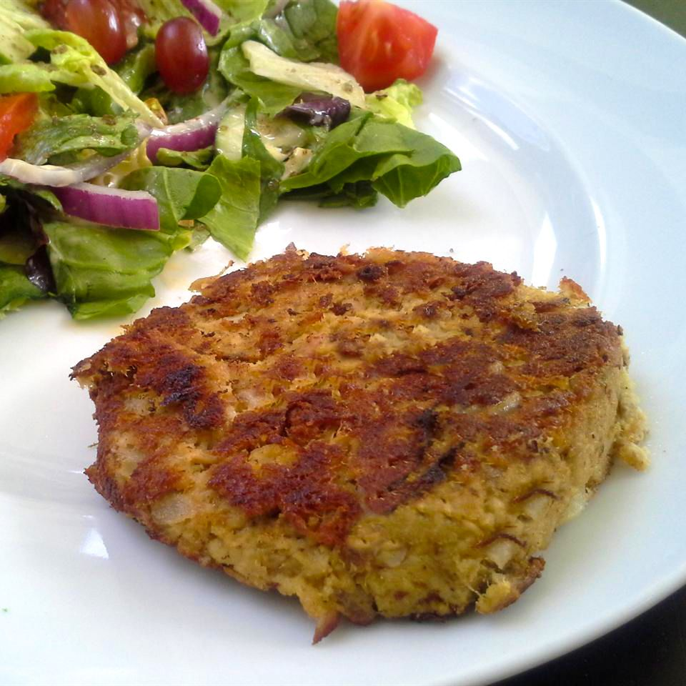

Tuna Cake

These lightly seared tuna fish cakes are a tasty delight, so who needs crab and a deep fryer? Tuna works great, and there's less fat with pan-frying. Serve with hot sauce or mayonnaise.
Ingredients
- 1 large potato, peeled and cubed
- 4 (3 ounce) cans tuna, drained
- 1/4 cup chopped onion
- 1 egg
- 1 tablespoon Dijon mustard
- 1 tablespoon dry bread crumbs, or as needed
- 1/2 teaspoons garlic powder
- 1 teaspoon Italian seasoning
- 1/4 teaspoon cayenne pepper
- salt and ground black pepper to taste
- 1 tablespoon olive oil
Steps
- Place potato into a small pot and cover with salted water. Bring to a boil over high heat, then reduce the heat to medium-low, cover, and simmer until tender, about 20 minutes. Drain and allow to steam dry in the pot for 1 to 2 minutes. Transfer to a large bowl and mash with a potato masher or fork.
- Add tuna, onion, egg, mustard, bread crumbs, garlic powder, Italian seasoning, cayenne pepper, salt, and pepper and mix until well blended. Divide tuna mixture into eight equal portions and shape into patties.
- Heat olive oil in a skillet over medium heat. Add tuna patties and pan-fry until browned and crisp, about 3 minutes per side.